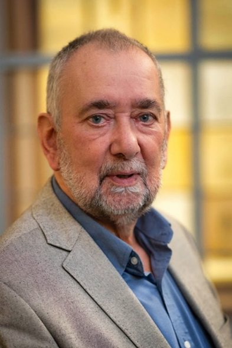
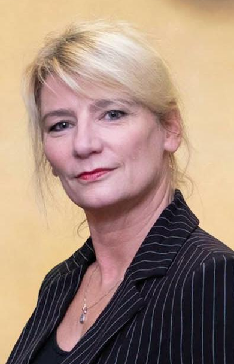
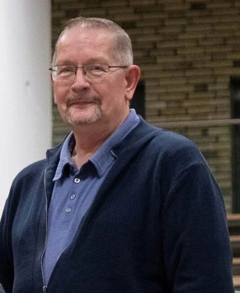
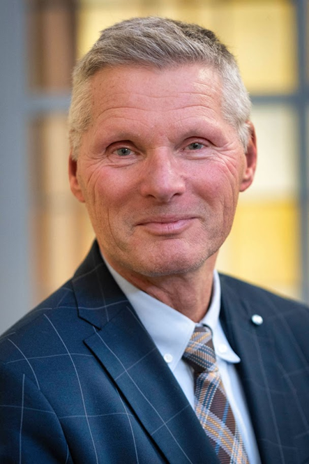
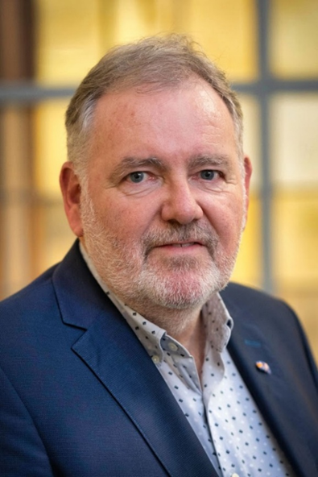
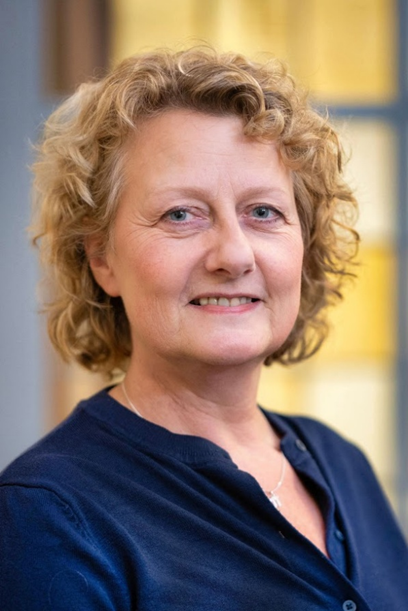
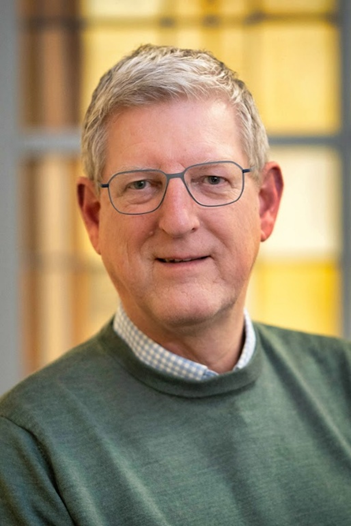

Kandidatenlijst
Klik op een naam om de foto en het tekstje te bekijken (bij de eerste 8 kandidaten).

Wageningen is mij lief omdat het een ideale mix is tussen een stad en een dorp in een fantastische en gevarieerde omgeving. Bovendien eeuwig jong door de jaarlijkse aanwas van nieuwe en jonge (internationale) studenten. Mooi om zo’n stad als lid van de Stadspartij te mogen besturen. Ik denk wel eens: “Eigenlijk is de Stadspartij geen politieke partij. De Stadspartij is meer een beweging die opkomt voor een fijne leef- werk- en woonomgeving in Wageningen en opkomt voor de belangen van haar inwoners. We hebben weleens overwogen de naam te veranderen in ‘Stadsbeweging’. Maar dat klinkt niet, vinden we. Bovendien: het zit in de naam! Daarom blijft de Stadspartij gewoon zo heten en blijf ik me gewoon inzetten voor alle inwoners van Wageningen. Want besturen is leuk, maar inwoners helpen nog leuker.
Wageningen is mij lief! Toen ik een poos geleden in Wageningen kwam wonen voelde ik mij meteen thuis. Ik leerde de omgeving en de mensen kennen, altijd opzoek naar het echte Wageningse gevoel. De afgelopen jaren heb ik veel geluisterd. Door te luisteren naar wat er leeft en speelt zie je pas echt de stad. De komende vier jaar wil ik het realisme weer terug op de agenda van de gemeenteraad zetten. Daarnaast wil ik mij nadrukkelijk inzetten voor de Wageningse jongeren. Bijvoorbeeld door echt werk te maken van een uitgaans- en ontmoetingsplek in de stad, als ook in te zetten op een versnelling van meer betaalbare woningen. Als het gaat om bereikbaarheid, parkeren of groenonderhoud: we zetten de nadruk op wijkgerichte inspraak. Op deze manier wil de Stadspartij beter inspelen op wat er leeft in de wijk. Zo zijn we er voor en met de inwoners van Wageningen.

Wageningen zit in mijn hart. Het is de plek waar ik opgroeide, me thuis voel en waar ik me wil inzetten voor de toekomst. Van mijn eerste danspassen in De Pomhorst tot mijn eerste stappen in de lokale politiek: Wageningen heeft mij gevormd. Ik geloof in een stad waar sport en cultuur mensen verbinden en waar de binnenstad leeft en bruist. Een sterke, toegankelijke binnenstad is het kloppend hart van onze gemeenschap. Of je nu je eerste passen zet op een blotevoetenpad in het bos, speelt in de speeltuin, of later door het centrum wandelt of over de dijk uitkijkt — Wageningen blijft een stad in beweging. Een stad van inwoners, ondernemers en verenigingen. Daar wil ik me met betrokkenheid en energie hard voor maken. Omdat Wageningen mij lief is.

Sinds jonge leeftijd woon ik in Wageningen en ik voel me heel betrokken bij de stad. Vooral het sociaal domein heeft mijn aandacht. Het is heel belangrijk om inwoners die het minder hebben of die niet voor zichzelf kunnen opkomen een kans te geven om volwaardig mee te doen in de samenleving. Daarnaast is sociale huisvesting belangrijk. Er is jarenlang te weinig gebouwd op dat gebied. Ook het onderhoud van dergelijke woningen laat veel te wensen over. Ook de veiligheid op straat heeft mijn aandacht. En met veiligheid bedoel ik een goede inrichting van de openbare ruimte, goed onderhouden voetpaden, goede verlichting en onderhoud van het openbaar groen. Ik ben actief bij de Stadspartij omdat ik veel waarde hecht aan betrouwbaarheid in de politiek: zeggen wat je doet, en doen wat je zegt. Ik kan slecht tegen onrecht. Wageningen is mij lief vanwege de mooie groene omgeving van Wageningen, de gezellige binnenstad en de grote diversiteit aan inwoners.

Wageningen is me lief. Het is mijn geboortestad en de stad waar ik een fijne jeugd heb gehad. Na het Wagenings Lyceum woonde ik een paar jaar in de VS, waar ik bedrijfskunde studeerde. Sport is belangrijk voor mij: ik zwem veel en was jarenlang actief bij WZ&PC De Rijn als zwemmer en trainer. Ik werkte ruim dertig jaar bij de KLM. Ongeveer vijftien jaar geleden keerde ik met mijn partner Raul terug naar Wageningen, ook om voor mijn ouders te zorgen. Ik ben lid geworden van de Stadspartij Wageningen omdat deze partij echt lokaal is en zich inzet voor alle inwoners en een fijne, leefbare stad. Mijn interesses liggen bij financiën en duidelijke communicatie van de gemeente. Veel teksten zijn nu te moeilijk. Dat kan en moet beter. Ook wil ik mij inzetten voor ouderen, die te vaak worden vergeten bij thema’s zoals ‘wonen’ en activiteiten in de stad.

Mijn naam is Henk van de Beek en ik woon al bijna mijn hele leven in Wageningen. Na mijn actieve loopbaan als Marine Officier heb ik mij jarenlang in gezet voor de herdenking van 4 en 5 mei in Wageningen. Nu mag ik sinds mei 2025 raadslid voor de Stadspartij zijn. Vooral het betrekken van jongeren rond het thema “Vrijheid” ligt mij na aan het hart. Maar ook de belangen van ouderen in Wageningen, denk hierbij aan wonen en de bereikbaarheid van belangrijke voorzieningen worden niet door mij uit het oog verloren. Naast deze onderwerpen wil ik mij ook graag inzetten voor een veilig Wageningen, een Wageningen waar zeker nog meer aandacht voor de historische binnenstad op zijn plaats is. Ik kijk ernaar uit om mij namens de Stadspartij in te zetten voor de inwoners van Wageningen.

Als geboren en getogen Wageningse voel ik mij sterk verbonden met ‘het Verhaal van Wageningen’; de geschiedenis, tradities en verhalen die onze stad maken tot wat de stad nu is. Mijn speciale aandacht gaat uit naar ons cultureel erfgoed, zowel materieel als immaterieel. Van monumenten tot verhalen en initiatieven die van generatie op generatie worden doorgegeven: het zijn deze elementen die onze stad kleur geven en ons met elkaar verbinden. Ik geloof dat het koesteren en zichtbaar maken van dit erfgoed essentieel is voor een sterke, levendige gemeenschap. Als raadslid wil ik mij inzetten voor een fijne en leefbare stad voor alle inwoners; een stad waarin we ruimte geven aan cultuur, duurzaamheid en elkaar. Wageningen is een plaats waar mensen met diverse achtergronden samenkomen; dat maakt ons uniek. Maar om de stad leefbaar te houden moeten we wel zorgen dat er voldoende woningen zijn, het groen om de stad ook groen blijft en de (binnen)stad bereikbaar blijft. Ik kijk ernaar uit om samen met inwoners, organisaties en mede-raadsleden te werken aan een stad die haar verleden koestert en haar toekomst met vertrouwen tegemoet treedt.

Na de vorige periode als raadslid actief te zijn geweest, dacht ik afscheid te nemen van de politiek. Het is echter nooit uit mijn gedachten verdwenen. Nu is het moment gekomen om weer als kandidaat raadslid van de Stadspartij aan de slag te gaan. Momenteel ben ik werkzaam in de Jeugdzorg. Mijn focus is in eerste instantie gericht op het sociaal domein. Maar ook zal ik mij inzetten voor andere dossiers. Mijn drijfveer is de kenmerken van onze mooie stad Wageningen, sociaal, herkenbaar en leefbaar, te behouden. Ruim 40 jaar woon ik in Wageningen. In mijn vrije tijd trek ik er graag op uit om van de mooie natuur in Wageningen en de omgeving te genieten.
Overige kandidaten
- Ingrid Hijman
- Klaas de Weerd
- Marike van der Leeden
- Marius Eimers
- Angelique Michels
- Claudius van de Vijver
- Erna Eikhoudt
- Dick Lubbers
- Adri Ruisch
- Mirjam Troost
- André Koedam
- Erwin van Dorland
- Raul Gonzalez Gomez
- Monique Kool
- Jan van Brakel
- Dennis Klos
- Karin Hofstede-de Kruijf
- Frans Roelofs
- Ron Paans
- Nikky Swinkels
- Elizabeth Rijksen
- Akosh Kardos
- Cius Sawor
- Peter Looyenga
- Jolanda van Eijk
- Ollie Onderstal
- Marcel Reulen
- Jose Lozano Torres
- Marleen Brummelman
- Teus Vermeer
- Alex Grashof
- Richard Holleman
- Sabrina ten Böhmer
- Frits Gieltjes
- Leffert Oldenkamp
- Han ter Maat
- Eric Wijnacker